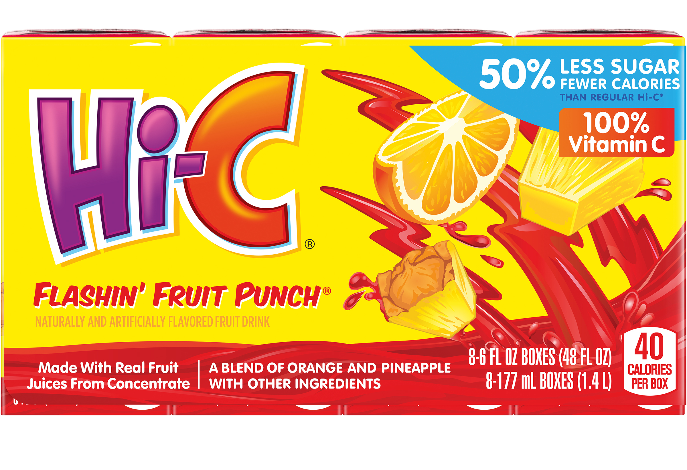

Order Hi-C

They changed the formula on the new Hi-C packages and reduced the amount of juice boxes from 10 to 8. Now people are complaining. Please find Hi-C at your local grocery store if you're in the US. Not all grocery stores have it.